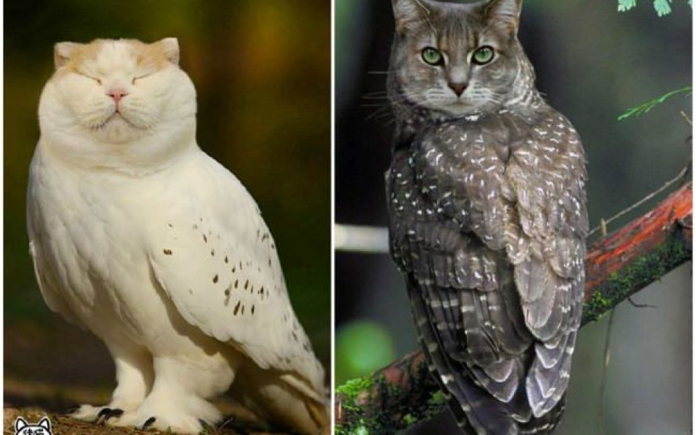
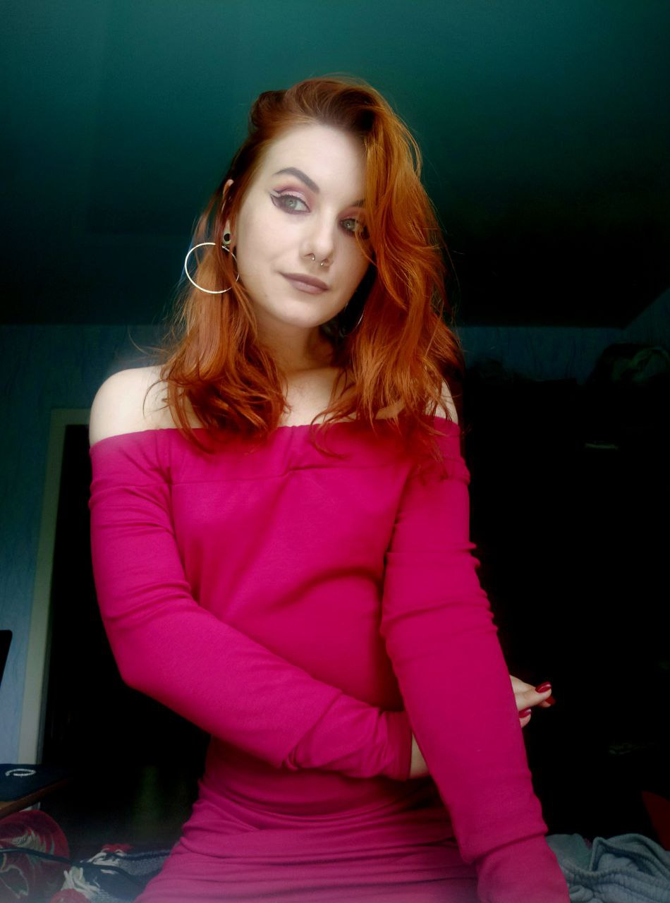

Дорогий щоденник!
День 510-й пошуку мужчини
Шок
Шок і несподіванка
Буває і таке, що є на світі відчайдухи. Є люди, які мають безмежний запас сміливості на межі дурості. Мене запросили на побачення
Отак от. Щоденник в шоці, я в шоці.
З'явився він - загадковий і перспективний. Назвемо його якось цікаво. Треба якась кодова назва. О! Мужчина. Звучить класно.
Знайомства в мережі штука цікава. Є багато часу щоб написати текст повідомлення правильно. Є Т9, який підкаже шо ти дурачьок. І є фотошоп. Також штука підступна світло і ракурси.
Коли бачиш одне фото то одразу в голові домальовується образ. Він цілісний і гармонійний. А коли фото декілька то стає важче. Особливо коли на одному фото на тебе дивиться одна людина, а на іншому - всиновлений брат двоюрідної сестри цієї людини.
Я наважилась вийти з 4-х стін. Зібрала всю сталь в руки і погодилась на побачення.
Так, все треба продумувати. Планую вихідний, планую транспорт до місця зустрічі. Думаю щодо зовнішнього вигляду. Люблю обтягуючі речі, та і форми трохи в порядок привела. То треба з козирів заходити. Так і зроблю: буду в приталеному одязі, буду чарівна.
Відкриваю прогноз погоди: злива, вітер, температура не вище 10 градусів. Розумію, що в трьох светрах буду виглядати як на фото нижче.

Намагаюся змиритися з тим, що ні форм ні татух не буде видно. Що ж, доведеться вражати відсутністю тупості. Отак завжди. Жодної надії на легкі шляхи.
Так, треба проаналізувати мужчину.
- Плюси
- високий (182см)
- наче не тупий
- наче не бомж
- любить норм музику
- Мінуси
- не латинос, ну прям ні разу не такий гарячий на вигляд як мені в душу западають
- краще говорить українською, ніж я
- холерик
Настав той день. Я прокидаюсь не на роботу (що взагалі саме по собі шок) а на побачення. Дістаю з шафи всі теплі речі, одягаю одразу все. Сумно дивлюсь на босоніжки, натягуючи чобітки. Навіть дістала хустинку для волосся. Кантрі-чіка вийшла.
Поки їхали на місце зустрічі, оговорили, що в тому місці крім мене дивитись буде нічого. Тож прогулянка явно буде десь в між ресторанів чи кафе.
Що ж. Побачення під дощем не такі романтичні як показують в фільмах. Або це я не така принцеса.
Як завжди я заляпалось з ніг до голови, промочила ноги, волосся покучерявилось і почало виглядати як шерсть підзаборного Сірка.
Саме того Сірка, що Сірко собака мій собака мій собака, що мій Сірко собака мій собака мій пес.
Зустрілись. Мужчина. Здоровенний!!!
Пішли гуляти. Звісно, по ливню сильно не нагуляєшся, тож ми обмежились закладами харчування. Знову впевнилась в своїй недалекоглядності. Це ж треба було додуматись поїсти зранку. Тепер сидимо і мені нічого не хочеться. А від думки, щоб замовити салат і смішно і нудно. Не настільки ж я банальна баба.
День минув, все пройшло на диво нормально. Мої побоювання того, що він маньяк не виправдались. Чудово. Спілкуватись було досить приємно. Отже це може не останнє побачення.
Повторний аналіз
- Плюси
- високий (ЗДОРОВЕННИЙ)
- не тупий
- не бомж
- любить норм музику
- Мінуси
- гарячий хоч і не латинос
- виправляє мої помилки в мові (50/50 мінус і плюс)
- холерик
- сексист
- нетолерантний до меншин
Підсумуємо. Мужчина нормальний, не набридливий і не тупий, відповідальний і не жадібний. Норм. Під пивко піде